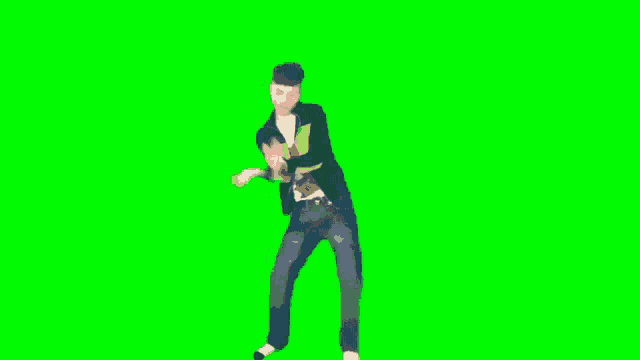

😌 "Có làm mới có ăn…
mà chơi số cũng là làm!"
mà chơi số cũng là làm!"
🎰 Vietlott · Công Cụ Chọn Số
Chỉ Cần Chọn Trúng
Thoát Đời Dalit
Hành động nhỏ, kết quả to.
Người không chơi là người không trúng.

💃 Múa trước để ăn mừng
khi trúng số!
khi trúng số!
Chọn công cụ phù hợp với bạn
Jackpot lớn
Vietlott
Mega 6/45
Thuật toán heuristic tối đa hóa xác suất trúng 4 số, giảm thiểu trùng lặp giữa các vé. Tự động cân bằng lẻ/chẵn và thấp/cao.
Bao phủ tổ hợp 4 số tối ưu
Phạt cứng khi trùng ≥ 3 số
Tìm kiếm thích ứng theo thứ tự vé
Hỗ trợ hạt giống cố định (seed)
Quay thưởng nhanh
Vietlott
Keno
Tối ưu xác suất cho trò chơi Keno quay nhanh — phân tích tần suất, tối đa hóa độ phủ và hỗ trợ nhiều chiến lược chọn số khác nhau.
Phân tích tần suất xuất hiện
Tối ưu bộ số theo mục tiêu
Quay thưởng mỗi 3–5 phút
Giao diện trực quan, dễ dùng
⚠️ Lưu ý: Các công cụ này chỉ mang tính chất hỗ trợ tham khảo dựa trên thuật toán toán học.
Xổ số là trò chơi may rủi — không có phương pháp nào đảm bảo trúng thưởng.
Hãy chơi có trách nhiệm và trong giới hạn tài chính của bạn.